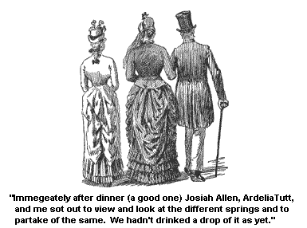
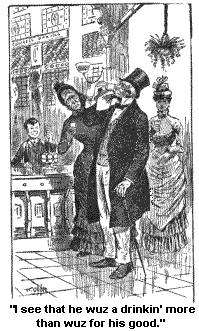
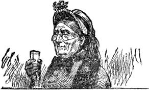

VII.
SEEING THE DIFFERENT SPRINGS.

Immegeatly after dinner (a good one) Josiah Allen, Ardelia Tutt and me sot out to view and look at the different springs and to partake of the same. We hadn't drinked a drop of it as yet. Ardelia had come over to go with us. She had on a kind of a yellowish drab dress and a hat made of the same, with some drab and blue bows of ribbon and some pink holly-hawks in it, and she had some mits on (her hands prespired dretfully, and she sweat easy). As I have said, she is a good lookin' girl but soft. And most any dress she puts on kinder falls into the same looks. It may be quite a hard lookin' dress before she puts it on, but before she has wore it half a hour it will kinder crease down into the softest lookin, thing you ever see. And so with her bonnets, and mantillys, and everything.
The down onto a goslin's breast never looked softer than every rag she had on this very afternoon, and no tender goslin' itself wuz ever softer than she wuz on the inside on't. But that didn't hinder my likin' her.
Wall, anon, or a little before, we came to that long, long buildin', beautiful and dretful ornimental, but I could see plain by daylight what I had mistrusted before, that it wuzn't built for warmth. It must be dretful cold in the winter, and I don't see how the wimmen folks of the home could stand it, unless they hang up bed quilts and blankets round the side, and then, I should think they would freeze. They couldn't keep their house plants over winter any way - and I see they had sights of 'em - unless they kep' 'em down suller.
But howsumever, that is none of my lookout. If they want to be so fashionable, as to try to live out doors and in the house too, that is none of my business. And of course it looked dretful ornimental and pretty. But I will say this, it haint bein' mejum. I should rather live either out doors, or in the house, one of the 2. But I am a eppisodin'. And to resoom.
Josiah Allen paid the money demanded of him and we went in and advanced onwards to where a boy wuz a pullin' up the water and handin' of it round.
It looked dretful bubblin' and sparklin'. Why sunthin' seemed to be a sparklin' up all the time in the water and I thought to myself mebby it wuz water thoughts, mebby it wanted to tell sunthin', mebby it has all through these years been a tryin' to bubble up and sparkle out in wisdom but haint found any one yet who could understand its liquid language. Who knows now?
I took my glass and looked close - sparkle, sparkle, up came the tiny thought sparks! But I wuzn't wise enough to read the glitterin' language. No I wuzn't deep enough. It would take a deep mind, mebby thousands of feet deep, to understand the great glowin' secret that it has been a tryin' to reveal and couldn't. Mebby it has been a tryin' to tell of big diamond mines that it has passed through - great cliffs and crags of gold sot deep with the crystalized dew of diamonds.
But no, I didn't believe that wuz it. That wouldn't help the world, only to make it happier, and these seemed to me to be dretful inspirin', upliftin' thoughts. No, mebby it is a tryin' to tell a cold world about a way to heat it. Mebby it has been a runnin' over and is sparklin' with bright thoughts about how deep underneath the earth lay a big fireplace, that all the cold beggars of mortality could set round and warm their frozen fingers by, - a tryin' to tell how the heat of that fire that escapes now up the chimbleys of volcanoes, and sometimes in sudden drafts blows out sideways into earthquakes, etc., could be utilized by conveyin' it up on top of the ground, and have it carried into the houses like Croton water. Who knows now? Mebby that is it!
Oh! I felt that it would be a happy hour for Samantha when she could bile her potatoes by the heat of that large noble fire-place. And more than that, far more wuz the thought that heat might become, in the future, as cheap as cold. That the little cold hands that freeze every winter in the big cities, could be stretched out before the big generous warmth of that noble fire-place. And who built that fire in the first place? Who laid the first sticks on the handirons, and put the match to it? Who wuz it that did it, and how did he look, and when wuz he born, and why, and where?
These, and many other thoughts of similar size and shape, filled my brane almost full enough to lift up the bunnet, that reposed gracefully on my foretop, as I stood and held the sparklin' glass in my hands.
Sparkle! sparkle! sparkle! what wuz it, it wuz a tryin' to say to me and couldn't? Good land! I couldn't tell, and Josiah couldn't, I knew instinctively he couldn't, though I didn't ask him.
No, I turned and looked at that beloved man, for truly I had for the time bein' been by the side of myself, and I see that he wuz a drinkin' lavishly of the noble water. I see that he wuz a drinkin' more than wuz for his good, his linement showed it, and sez I, for he wuz a liftin' another tumbler full onto his lips, sez I, "Pause, Josiah Allen, and don't imbibe too much."

"Why," he whispered, "you can drink all you are a mind to for 5 cents. I am bound for once, Samantha Allen, to get the worth of my money."
And he drinked the tumbler full down at one swoller almost, and turned to the weary boy for another. He looked bad, and eager, and sez I, "How many have you drinked?"
Sez he, in a eager, animated whisper, "9." And he whispered in the same axents, "5 times 9 is 45 ; if it had been to a fair, or Fourth of July, or anything, it would have cost me 45 cents, and if it had been to a church social - lemme see - 9 times 10 is 90. It would have cost me a dollar bill! And here I am a havin' it all for 5 cents. Why," sez he, "I never see the beat on't in my life."
And ag'in he drinked a tumbler full down, and motioned to the frightened boy for another.
But I took him by the vest and whispered to him, sez I, "Josiah Allen, do you want to die, because you can die cheap? Why," sez I, "it will kill you to drink so much."
"But think of the cheapness on't Samantha! The chance I have of getting the worth of my money."
But I whispered back to him in anxus axents and told him, that I guessed if funeral expenses wuz added to that 5 cents it wouldn't come so cheap, and sez I, "you wont live through many more glasses, and you'll see you wont. Why," sez I, "you are a drowndin' out your insides."
He wuz fairly a gettin' white round the mouth, and I finally got him to withdraw, though he looked back longingly at the tumblers and murmured even after I had got him to the door, that it wuz a dumb pity when anybody got a chance to get the worth of their money, which wuzn't often, to think they couldn't take advantage on it.
And I sez back to him in low deep axents, "There is such a thing as bein' too graspin', Josiah Allen." Sez I, "The children of Israel used to want to lay up more manny than they wanted or needed, and it spilte on their hands." And sez I, "you see if it haint jest so with you; you have been in too great haste to enrich yourself, and you'll be sorry for it, you see if you haint."
And he was. Though he uttered language I wouldn't wish to repeat, about the children of Israel and about me for bringin' of 'em up. But the man wuz dethly sick. Why he had drinked 11 tumblers full, and I trembled to think what would have follered on, and ensued, if I hadn't interfered. As it wuz, he wuz confined to our abode for the rest of the day.
But I wouldn't have Josiah Allen blamed more than is due for this little incedent, for it only illustrates a pervailin' trait in men's nater, and sometimes wimmen's - a too great desire to amass sudden riches, and when opportunity offers, burden themselves with useless and wearysome and oft-times painful gear.
They don't need it but seeing they have a chance to get it cheap, "dog cheap " as the poet observes, why they weight themselves down with it, and then groan under the burden of unnecessary and wearin' wealth. This is a deep subject, deep as the well from which my companion drinked, and nearly drinked himself into a untimely grave.
Men heap up more riches than they can enjoy and then groan and rithe under the taxes, the charity given, the envy, the noteriety, the glare, and the glitter, the crowd of fortune-hunters and greedy hangers-on, and the care and anxiety. They orniment the high front of their houses with the paint, the gildin', the fashion, and the show of enormous wealth, and while the crowd of fashion-seekers and fortune-hunters pour in and out of the lofty doorway they set out on the back stoop a groanin' and a sithin' at the cares and sleepless anxietes of their big wealth, and then they git up and go down street and try their best to heap up more treasure to groan over.
And wimmen now, when wuz there ever a woman who could resist a good bargain? Her upper beauro draws may be a runnin' over with laces and ribbons, but let her see a great bargain sold for nothin' almost, and where is the female woman that can resist addin' to that already too filled up beauro draw.
A baby, be he a male, or be he a female child, when he has got a appel in both hands, will try to lay holt of another, if you hold it out to him. It is human nater. Josiah must not be considered as one alone in layin' up more riches than he needed. He suffered, and I also, for sech is the divine law of love, that if one member of the family suffers, the other members suffer also, specially when the sufferin' member is impatient and voyalent is his distress, and talks loud and angry at them who truly are not to blame.
Now I didn't make the springs nor I wuzn't to blame for their bein' discovered in the first place. But Josiah laid it to me. And though I tried to make him know that it wuz a Injun that discovered 'em first, he wouldn't gin in and seemed to think they wouldn't have been there if it hadn't been for me.
I hated to hear him go on so. And in the cause of Duty, I brung up Sir William Johnson and others. But he lay there on the lounge, and kep' his face turned resolute towards the wall, in a dretful oncomfertable position (sech wuz his temper of mind), and said, he never had heard of them, nor the springs nuther, and shouldn't if it hadn't been for me.
Why, sez I, "A Injun brought Sir William Johnson here on his back."
"Wall," sez he, cross as a bear, "that is the way you'll have to take me back, if you go on in this way much longer."
"In what way, Josiah?" sez I.
"Why a findin' springs and draggin' a man off to 'em, and makin' him drink."
"Why, Josiah Allen," sez I, "I told you not to drink - don't you remember?"
"No! I don't remember nuthin', nor don't want to. I want to go to sleep!" sez he, snappish as anything, so I went out and let him think if he wanted to, that I made the Springs, and the Minerals, and the Gysers, and the Spoutin' Rock, and everything. Good land! I knew I didn't; but I had to rest under the unkind insinnuation. Such is some of the trials of pardners.
But Josiah waked up real clever. And I brung him up some delicate warm toast and some fragrant tea, and his smile on me wuz dretful good-natured, almost warm. And I forgot all his former petulence and basked in the rays of love and happiness that beamed on me out of the blue sky of my companion's eyes. The clear blue sky that held two stars, to which my heart turned.
Such is some of the joys of pardners with which the world don't meddle with, nor can't destroy.
But to resoom. Ardelia sot down awhile in our room before she went back to her boardin' house. I see she wuz a writin' for she had a long lead pencil in her right hand and occasionally she would lean her forrerd down upon it, in deep thought, and before she went, she slipped the verses into my hand.
Sez I, a lookin' over my specks at Ardelia after I had finished readin' the verses: "What does 'ron' mean? I never heerd of that word before, nor knew there wuz sech a one."
Sez she, "I meant ran, but I s'pose it is a poetical license to say 'ron,' don't you think so?"
"Oh, yes," sez I, "I s'pose so, I don't know much about licenses, nor don't want to, they are suthin' I never believed in. But," sez I, for I see she looked red and overcasted by my remarks, "I don't s'pose it will make any difference in a 100 years whether you say ran or ron."
But sez I, "Ardelia, it is a hot day, and I wouldn't write any more if I wuz in your place. If you should heat your bra-, the upper part of your head, you might not get over it for some time."
"But," sez she, "you have told me sometimes to stop on account of cold weather."
"Wall," sez I, "most any kind of weather is hard on some kinds of poetry." Sez I, "Poetry is sunthin' that takes particular kinds of folks and weather to be successful." Sez I, "It is sunthin' that can't be tampered with with impunity by Christians or world's people. It is a kind of a resky thing to do, and I wouldn't write any more to-day, Ardelia."
And she heard to me and after a settin' a while with us, she went back to Mr. Pixley's.
